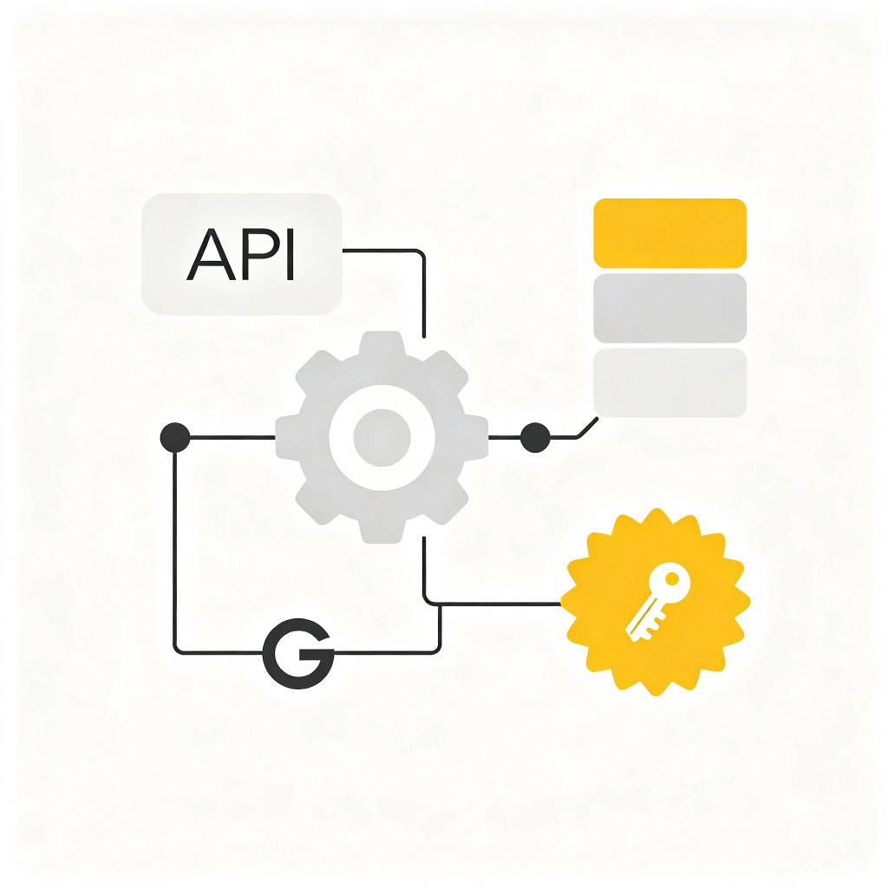

上传 PDF、Word 等格式的试卷或复习资料，AI 自动转换为可交互的网页
AI 自动识别试卷中的题目、选项、答案区域，精准提取每一道题目，无需手动排版
转换后的试卷支持在线作答、实时判分、答案解析，体验远超纸质试卷

灵活设置答题时间、题目顺序、分数权重等参数，满足不同教学场景需求
支持 PDF、Word、图片等格式，拖拽即可上传
AI 自动解析内容，生成可交互的网页试卷
在线作答、查看解析、分享给同学